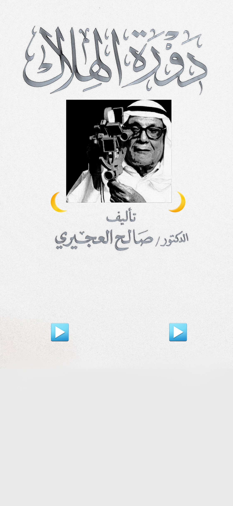

<audio id="5" src="5.mp3" preload="auto"></audio>
<audio id="2" src="2.mp3" preload="auto"></audio>


<script>
    function f5() {
        var audio = document.getElementById("5");

        if (audio.duration > 0 && !audio.paused) {
            audio.pause();
            audio.currentTime = 0;
        } else {
            audio.play();
        }
    }
    function f2() {
        var audio = document.getElementById("2");

        if (audio.duration > 0 && !audio.paused) {
            audio.pause();
            audio.currentTime = 0;
        } else {
            audio.play();
        }
    }
   

</script>


<map name="image-map">

   
       <area target="_blank" alt="" title="" href="" onclick="javascript:f5(); return false;" coords="226,1542,345,1653" shape="rect">
    <area target="_blank" alt="" title="" href="" onclick="javascript:f2(); return false;" coords="800,1541,916,1652" shape="rect">

</map>
